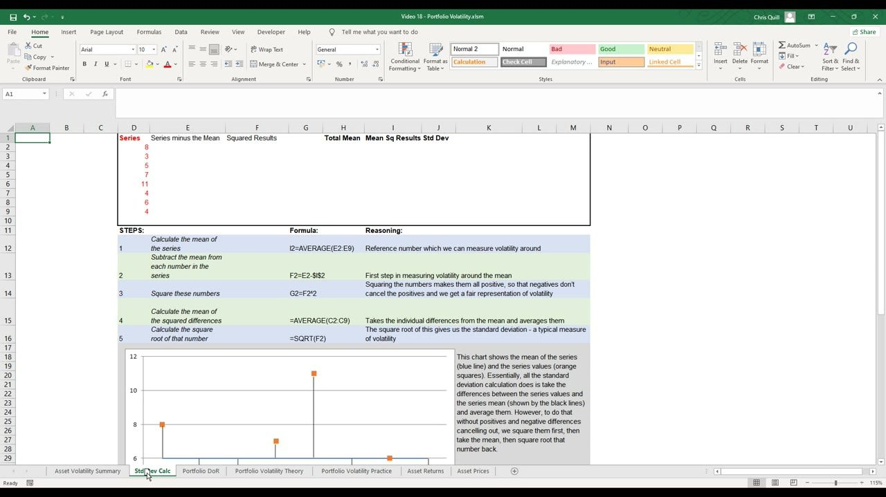
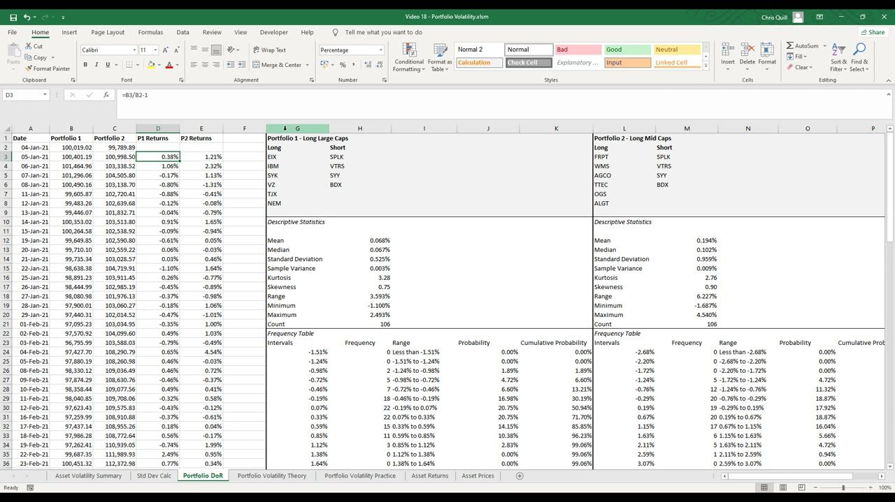
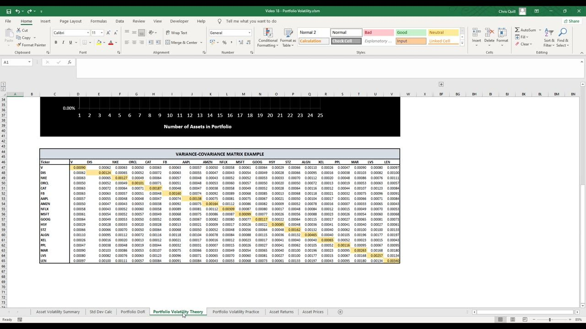
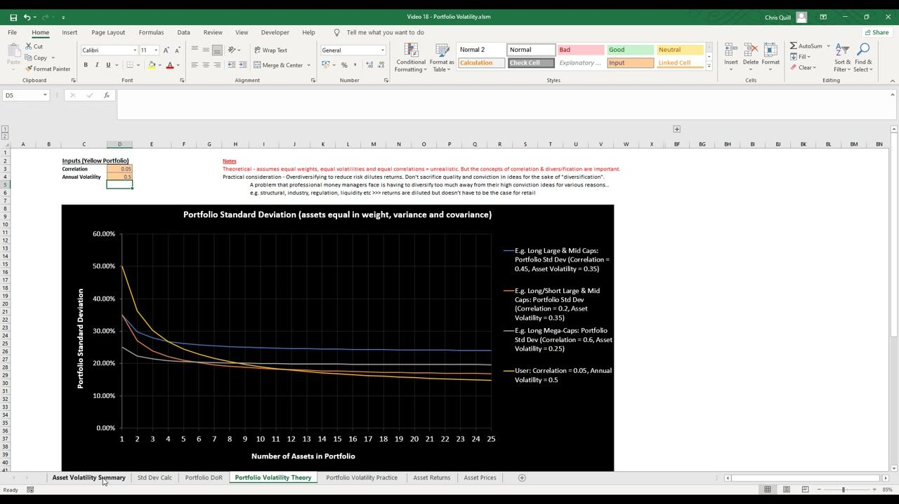
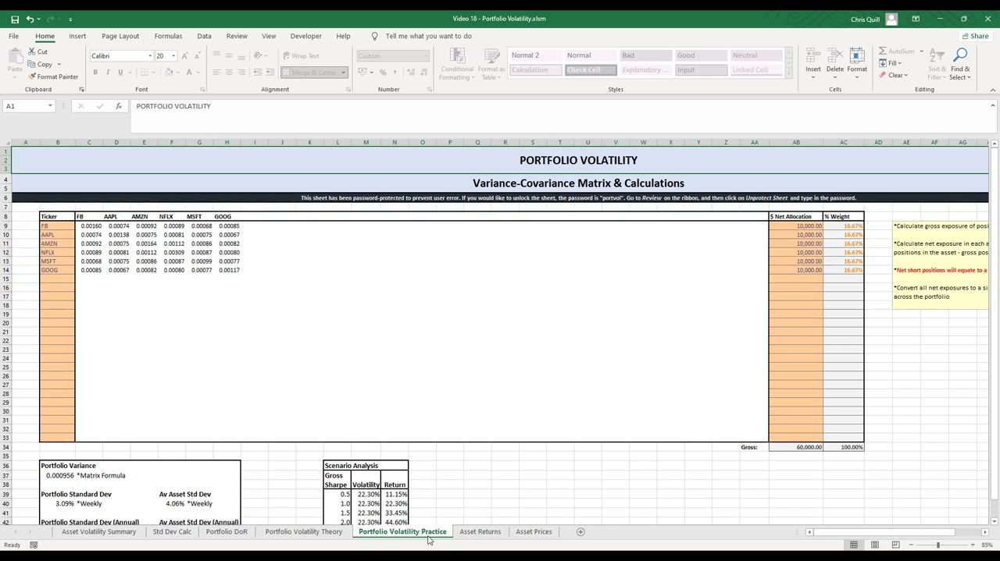
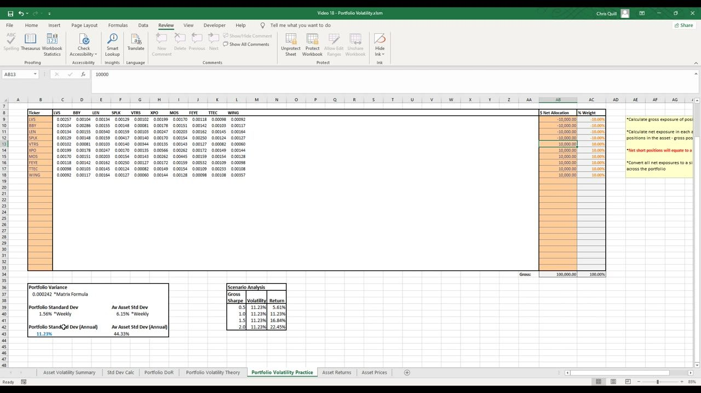
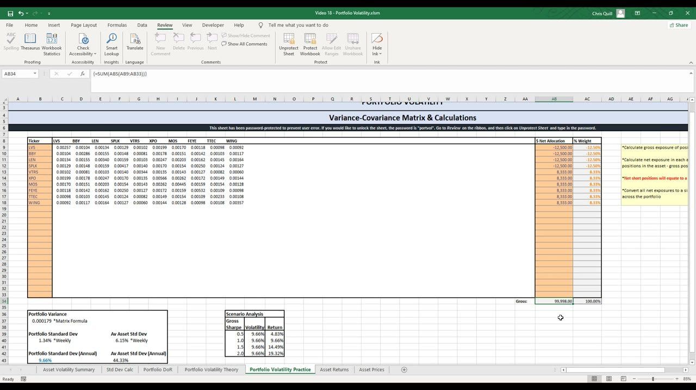

Foundations of Long/Short Portfolio Management 2
Portfolio volatility from first principles — how correlation, diversification and (above all) going long/short collapse whole-book risk without collapsing return
Standard deviation squared is variance; a portfolio's variance is Σ wᵢ·wⱼ·covᵢⱼ over a variance-covariance matrix, so it's the correlations between positions — not the assets' own volatilities — that drive portfolio risk, and injecting SHORT positions turns those relationships negative to collapse portfolio volatility (44.33% average asset vol → 9.66% long/short) while options restore the upside.
The gist
- Standard deviation is built from first principles: take the mean, subtract it from each value, SQUARE the differences (so positives and negatives don't cancel), average them (= the VARIANCE), then square-root back. Key identity used everywhere after: variance = σ², so σ = √variance. =STDEV.P reproduces the manual result.
- Expected portfolio volatility needs three inputs — position WEIGHTS (each position's gross exposure ÷ portfolio gross, summing to 100%), each asset's VARIANCE, and every pairwise COVARIANCE — assembled into a variance-covariance matrix. Portfolio variance = Σᵢ Σⱼ wᵢ·wⱼ·covᵢⱼ; Portfolio Std Dev = √variance; annualise a weekly figure ×√52.
- Covariance measures the (unbounded) linear relationship between two assets; correlation is just normalised covariance bounded −1 to +1. As assets are added, portfolio variance depends on FAR more covariance terms than variance terms (3 stocks = 3 variances + 6 covariances) — so in any real-sized book it's the relationships between positions, not the individual volatilities, that dominate.
- The diversification curve: portfolio std dev falls as you add assets, and the SPEED of the fall and the FLOOR it settles at are set by the average CORRELATION, not the asset volatilities. Lower correlation → faster fall and lower floor (corr 0.60 barely diversifies; corr 0.20 starts higher yet ends lower; corr 0.05 falls steepest).
- Going LONG/SHORT is the dramatic move: taking the same large/mid-cap names and shorting some of them (no change to the stocks, gross weight unchanged) collapsed portfolio vol from 29.36% long-only to 11.23%, then to 9.66% dollar-neutral — while average asset vol stayed 44.33%. The drop comes purely from the negative correlations the shorts inject into the covariance sum.
- Lower volatility does NOT mean less profit: long/short is an all-markets absolute-return strategy (you lose less in down markets and compound ahead — recovering a 20% loss needs a 25% gain), and options' implicit leverage (5–10× exposure for the same capital, with asymmetric downside) restores and amplifies the upside.
- Don't over-diversify: marginal risk reduction goes to near-zero around 8–12 positions, and piling on names dilutes your highest-conviction ideas — a double hit to risk-adjusted returns. Target ~8–12 high-conviction, low-correlation positions; fundamentals drive selection, correlation fit is secondary.
Standard deviation from first principles (variance = σ²)
- Worked on the series 8, 3, 5, 7, 11, 4, 6, 4. Step 1: mean = AVERAGE (the reference to measure volatility around). Step 2: subtract the mean from each value. Step 3: SQUARE the differences (makes them all positive so negatives don't cancel positives). Step 4: AVERAGE the squared differences (= the variance). Step 5: SQRT that (undo the squaring) = the standard deviation.
- For this series: Total Mean = 6, Mean Squared Results (variance) = 6, Standard Deviation = 2.45.
- The shortcut =STDEV.P(range) reproduces the manual result exactly (population form). =STDEV.S is the sample form you use when estimating from a sample of past returns.
- This grounds the identity used everywhere in the portfolio model: variance = σ², and σ = √variance.
Volatility is just the typical distance of values from their mean. Squaring the differences before averaging is the whole trick — it stops the negatives cancelling the positives — and the final square-root simply reverses that squaring so the answer is back in the original units.

Portfolio DoR — comparing two whole portfolios' risk
- The prior video's two non-rebalanced H1-2021 books are analysed at the PORTFOLIO level with the same Distribution-of-Returns method: descriptive statistics, a frequency table, a probability histogram and an equity curve. Both had 106 daily returns over 107 days.
- Portfolio 1 (Long Large Caps): Mean 0.068%, Median 0.067%, Standard Deviation 0.525%, Sample Variance 0.003%, Kurtosis 3.28, Skewness 0.75, Range 3.593%, Min −1.100%, Max 2.493%.
- Portfolio 2 (Long Mid Caps): Mean 0.194%, Median 0.102%, Standard Deviation 0.959%, Sample Variance 0.009%, Kurtosis 2.76, Skewness 0.90, Range 6.227%, Min −1.687%, Max 4.540%.
- Read as relative risk/return: Portfolio 2 (the large+mid mix) has roughly 2× the daily σ and a wider range than Portfolio 1 (large cap) — more return but more volatility.
- The frequency table adds an empirical probability per return range plus a cumulative-probability column (e.g. ~85.85% chance Portfolio 1 returns less than 0.59% on a day).
This is realised (backward-looking) volatility on the whole book, not a forecast. Anton warns explicitly against inferring future probabilities from such a small historical set — the point is comparing the two portfolios' volatility, not predicting.

The variance-covariance matrix (correlation drives everything)
- Expected portfolio volatility needs three inputs: position WEIGHTS (each position's gross exposure ÷ portfolio gross, summing to 100%), each asset's VARIANCE, and every pairwise COVARIANCE.
- These assemble into a variance-covariance matrix: the DIAGONAL is each asset's variance (e.g. Visa 0.00090), the OFF-DIAGONAL is each pair's covariance (e.g. FB↔DIS 0.00063). The matrix is SYMMETRIC because cov(X,Y) = cov(Y,X).
- Covariance = the unbounded measure of the linear relationship between two assets; correlation (Pearson's) = normalised covariance bounded −1 to +1. Positive = move together, negative = move opposite. Anton uses the terms interchangeably here.
- Because portfolio variance sums over every pair, adding assets adds FAR more covariance terms than variance terms — 1 stock = 1 variance; 2 stocks = 2 variances + 2 covariances; 3 stocks = 3 variances + 6 covariances — so the RELATIONSHIPS between positions, not the individual vols, primarily drive portfolio volatility.
- Expected vol uses a SAMPLE of past weekly returns to estimate future variance/covariance. Correlations aren't fixed and can change significantly.
This is the mathematical heart of the lesson. Once a portfolio has more than one or two names, the pairwise relationships swamp the individual volatilities — which is exactly why choosing low-correlation (and short) positions matters more than picking low-volatility ones.

Diversification curve — correlation sets the slope and the floor
- Theory chart: portfolio standard deviation (y, 0–60%) vs number of assets (x, 1–25). Every line starts at that single asset's own volatility, then declines as assets are added — provided the new asset isn't perfectly correlated (≠ 1) with the rest.
- Grey line — 'Long Mega-Caps': asset vol 25%, correlation 0.60 → barely falls, flattening after ~6–7 names (long-only mega caps in similar sectors).
- Blue line — 'Long Large & Mid Caps': asset vol 35%, correlation 0.45.
- Red line — 'Long/Short Large & Mid Caps': asset vol 35%, correlation 0.20 → starts higher than mega-caps yet ends LOWER, because the lower correlation keeps the curve declining.
- Yellow line — live user inputs (e.g. correlation 0.05, annual volatility 0.5) → the steepest fall of all: low correlation cuts risk fastest.
- The model is deliberately theoretical (equal weights, equal volatilities, equal correlations = unrealistic) but the concepts of correlation and diversification are what matter.
The visual proof that correlation, not the constituents' own volatility, governs how far diversification can take you. A high-vol book of low-correlation names ends up LESS volatile than a low-vol book of highly-correlated ones.

The practice model — building the calculator (and long-only results)
- The 'Portfolio Volatility Practice' sheet is the live calculator (up to 25 positions, locked, password 'portvol'; Review > Unprotect Sheet). Type tickers into the orange column-B cells as a continuous unbroken list; the covariance matrix rebuilds automatically via COVARIANCE.S + INDIRECT/MATCH/ADDRESS looking up each ticker's return column by name.
- Give each position a dollar NET allocation (negative = short). Portfolio Variance = the matrix formula Σ wᵢ·wⱼ·covᵢⱼ → weekly Std Dev = √variance → annualised vol = weekly ×√52 (=B40*SQRT(52)).
- 6-asset equal-weight mega-cap book (FB, AAPL, AMZN, NFLX, MSFT, GOOG at $10k / 16.67% each, gross $60k): Portfolio Variance 0.000956, Portfolio Std Dev 3.09% weekly → 22.30% annual, vs Average Asset Std Dev 4.06% weekly → 29.26% annual — the portfolio is less volatile than the average of its parts.
- 10-asset long-only mega-cap book ($10k / 10.00% each, gross $100k): Portfolio Std Dev annual 19.23% vs Average Asset 28.28%.
- Switch to 5 large + 5 mid-cap names (LVS, BBY, LEN, SPLK, VTRS, XPO, MOS, FEYE, TTEC, WING, all long): Portfolio Variance 0.001658, annual vol jumps to 29.36% vs Average Asset 44.33% — mid/large caps are individually more volatile.
- Scenario Analysis reads off: for the modelled volatility, return ≈ gross Sharpe × volatility (Sharpe rows 0.5 / 1.0 / 1.5 / 2.0). At 29.36% vol → returns 14.68% / 29.36% / 44.04% / 58.72%.
The diversification benefit is real and quantified — the 6-asset book's 22.30% sits well below its 29.26% average asset vol precisely because the names aren't perfectly correlated. Data hygiene is the #1 gotcha: every price series must share identical start/end dates and frequency or the matrix breaks.

Going long/short — the volatility collapse
- Take the SAME large/mid-cap 10-name book and flip 4 of the large caps to SHORT (LVS, BBY, LEN, SPLK at −$10,000 / −10.00%; the other 6 long at +$10,000 / +10.00%; gross weight unchanged at 100%).
- Result: Portfolio Variance drops from 0.001658 to 0.000242, Portfolio Std Dev from 4.07% to 1.56% weekly, and ANNUAL vol from 29.36% to 11.23% — a 'massive difference' — while Average Asset Std Dev is unchanged at 6.15% weekly / 44.33% annual.
- Rebalance toward DOLLAR-NEUTRAL (4 shorts at −12.50% each, 6 longs at 8.33% each): annual vol falls further to 9.66% (variance 0.000179).
- Because the average asset volatilities did NOT change, the entire drop comes from the covariances/correlations — long and short positions partially cancel in the Σ wᵢ·wⱼ·covᵢⱼ sum (shorts effectively carry negative correlation to the longs). This is the mathematical proof of why professionals run long/short books.
- Dollar-neutral is only ONE balancing method and 'by no means what you should do' by default — the net long/short tilt is a deliberate expression of your market view; beta-neutrality is an alternative covered later.
Nothing about the stocks changed — only their sign. Shorting injects negative relationships into the covariance sum, which is a far more powerful lever on portfolio volatility than simply owning lower-vol names.

Why lower vol still means big profit — absolute return + options leverage
- Lower volatility does NOT mean less profit. Reason 1: long/short is an all-markets ABSOLUTE-RETURN strategy — you lose less in down markets and compound ahead over time (and recovering a 20% loss needs a 25% gain).
- Reason 2: the negative correlations are a property of THIS ~6-year sample; trading your own timed ideas you expect POSITIVE returns on both legs, and if wrong you're usually only wrong on one side.
- Reason 3: options carry implicit leverage — a fraction of the cost for similar exposure, so you can control leverage via how much capital you commit to premiums, giving up to 5–10× the volatility/exposure of the underlying for the same capital, with downside capped at the premium and unbounded upside (asymmetric payoff).
- Worked Mosaic (MOS) example: long call, strike $32, cost $1.83/share, allocation $10,000 → 54 contracts (×100) = $9,882 premium. At a $40 price target: potential profit = ($40−$32)×54×100 − $9,882 = $33,318. Buying the stock outright gave ~309 shares; the calls gave exposure to 5,400 shares for the same cost.
- Scenario Analysis / Sharpe: gross Sharpe = annualised return ÷ annualised volatility. Very good retail traders sustain ~1.5–2.0 → on this ~11% book that's ~17–22.5%/yr; with options leverage a well-run long/short book can target 75–100%+ in a very good year.
- Trader reality: a good trader is right ~60% / wrong ~40%; 90–95% of a year's trades net a small profit and 5–10% 'home runs' generate the majority of the year's P&L.
The book is de-risked on paper but not de-opportuned in practice: absolute-return construction keeps you compounding through all markets, and options put the leverage back — with a capped, asymmetric downside — so risk-adjusted returns actually rise.
Using the model yourself — data hygiene (the #1 gotcha)
- All price/return series must be the SAME length over IDENTICAL intervals or the matrix breaks — the sheet notes twice: 'Time-series prices/returns for each asset must have the same start and end dates, and the same frequency.'
- Source data from Yahoo Finance: choose Weekly frequency and use the Adjusted Close column, download the CSV per ticker.
- Sort newest-first, drop any incomplete latest week, paste-as-values, then TRUNCATE every series to the shortest so all lengths match. A raw CSV can silently carry decades of unwanted history (e.g. THO back to Jan 1984) that must be trimmed.
- The return series is always ONE row shorter than the prices; watch the bottom row for errors from referencing a prior price that doesn't exist (mis-aligned columns show #DIV/0!, and a broken matrix shows #N/A / #REF!).
- Worked 3-asset rebuild (THO, PZZA, MLHR, equal 33.33%): variance-covariance matrix THO 0.00327 / PZZA 0.00185 / MLHR 0.00314 on the diagonal; Portfolio Variance 0.001472, Portfolio Std Dev 3.84% weekly, annual vol 27.67%.
- Next video builds on this by adding a correlation matrix to monitor pairwise correlations across the portfolio in more detail.
The calculator is only as good as its data. Because every cell references aligned return columns, a single mismatched series poisons the whole matrix — which is why aligning start/end dates, frequency and length is the discipline that makes the model trustworthy.

Glossary
- Standard deviation (σ)The typical size of a period's return around the mean; built as √(average of squared deviations from the mean). The primary single-number volatility measure. =STDEV.P (population) / =STDEV.S (sample).
- VarianceStandard deviation squared (σ²) — the average of the squared deviations from the mean, before the square-root. The diagonal of the variance-covariance matrix.
- CovarianceThe unbounded measure of the linear relationship (co-movement) between two assets. cov(X,Y) = cov(Y,X), so the matrix is symmetric.
- CorrelationNormalised covariance, bounded −1 to +1. +1 = move together, −1 = move exactly opposite, 0 = unrelated. Anton uses covariance and correlation interchangeably in this lesson.
- Variance-covariance matrixA symmetric grid over the portfolio's tickers: diagonal = each asset's variance, off-diagonal = each pair's covariance. The engine of expected portfolio volatility.
- Portfolio variance (Matrix Formula)Σᵢ Σⱼ wᵢ·wⱼ·covᵢⱼ — the weighted double sum over every pair in the matrix, where wᵢ are position weights (negative for shorts). Portfolio Std Dev = √(portfolio variance).
- Position weightA position's gross exposure ÷ the portfolio's gross exposure; the weights sum to 100%. A SHORT position carries a negative weight.
- AnnualisingConvert a weekly standard deviation to annual by multiplying by √52 (=B40*SQRT(52) in the sheet).
- Long/short volatility collapseFlipping some longs to short (same stocks, same gross weight) injects negative correlations into the covariance sum, sharply lowering portfolio volatility (here 29.36% → 11.23% → 9.66% dollar-neutral) while average asset vol is unchanged.
- Dollar-neutralEqual dollar value on the long and short sides. One balancing method among several — not a default; the net long/short tilt should express your market view.
- Gross Sharpe ratioAnnualised portfolio return ÷ annualised volatility. Return ≈ gross Sharpe × volatility. Very good retail traders sustain ~1.5–2.0.
- Options implicit leverageOptions cost a fraction of the underlying for similar exposure — up to 5–10× exposure per unit of capital — with downside capped at the premium and unbounded call upside (asymmetric payoff).
- Over-diversificationAdding positions past ~8–12 gives near-zero extra risk reduction while diluting high-conviction ideas — a double hit to risk-adjusted returns. Fundamentals drive selection; correlation fit is secondary.